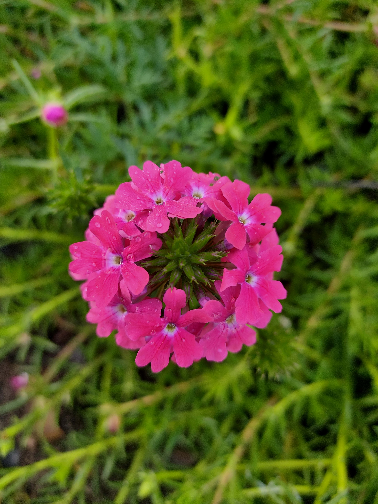
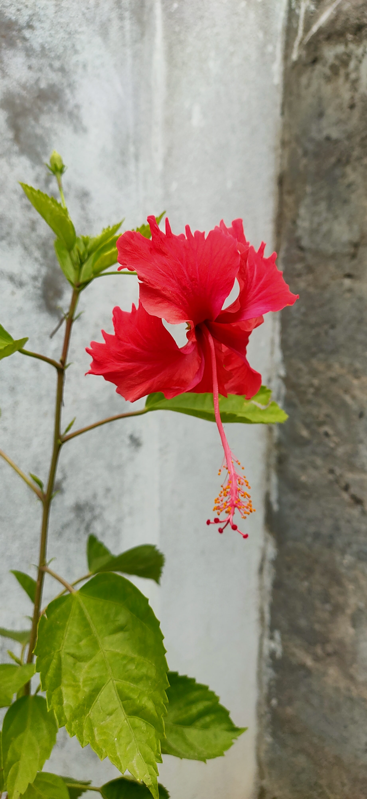
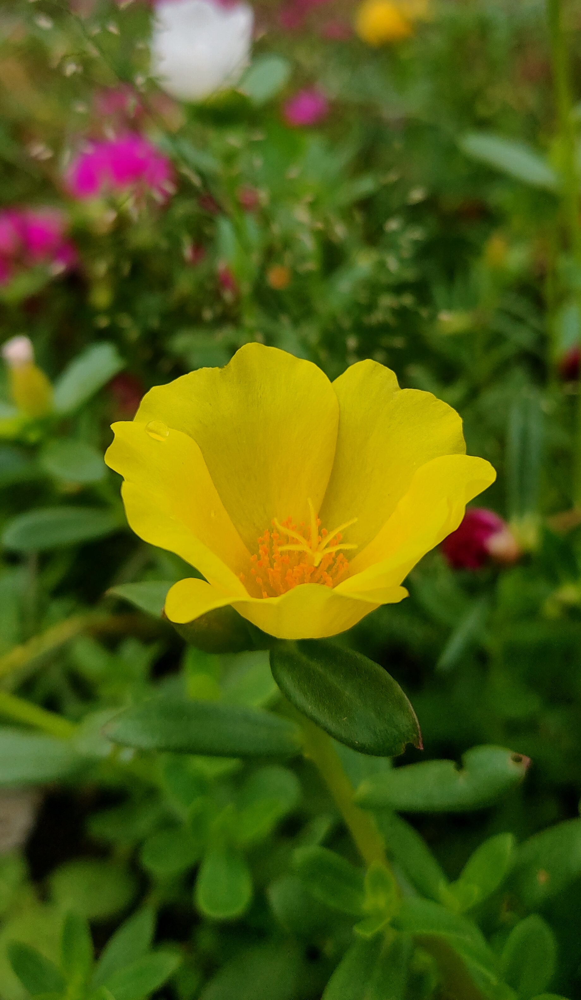

|  | Phlox paniculata |
Phlox paniculata is a species of flowering plant in the phlox family (Polemoniaceae). It is native to parts of the eastern and central United States. It is extensively cultivated in temperate regions as an ornamental plant and has become established in the wild in scattered locales in other regions. Common names include fall phlox, garden phlox, perennial phlox, summer phlox, and panicled phlox. |
|  | Hibiscus rosa-sinensis |
Hibiscus rosa-sinensis, known colloquially as Chinese hibiscus China rose,Hawaiian hibiscus, rose mallow and shoeblackplant, is a species of tropical hibiscus, a flowering plant in the Hibisceae tribe of the family Malvaceae. It is widely cultivated in tropical and subtropical regions, but is not known in the wild, so that its native distribution is uncertain.An origin in some part of tropical Asia is likely. It is widely grown as an ornamental plant in the tropics and subtropics. |
|  | Portulaca umbraticola |
Portulaca umbraticola, also known as the wingpod purslane, is a perennial succulent in the genus of flowering plants Portulaca. Although this species can be easily mistaken for P. oleracea, its foliage tends to be much smaller and wider than that of other species. Flower colours range from yellow, pink, orange and blue and the stems, leaves, flowers and roots are edible. Plants grow up to 25 cm tall. |